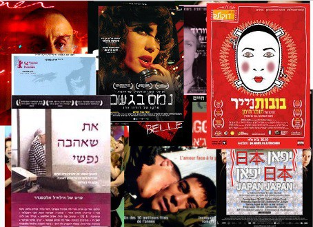
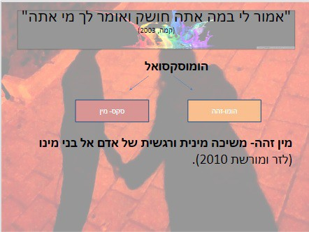
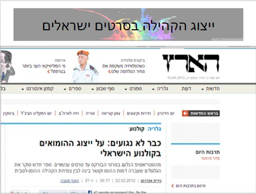

זהות מינית
הזהות מתעצבת על סמך סטיגמות, בלבול, קשרים חברתיים עם בני הקהילה, חיפוש אחר העצמי, סיפורי ילדים וסדרות טלוויזיה.
הבניה חברתית: ברוב המקרים התקשורת מבנה לנו מודל לכאורה "נורמלי", כאשר "בן לוקח בת ובת לוקחת בן".
מודל זה עלול ליצור אי נוחות אצל נער שמעוניין בבן מינו. החוסר ידע מוביל לשימוש בסטריאוטיפים ודעות קדומות.
(קמה, 2003)
(קמה, 2003)
מאפייני הקהילה
- פריצת גבולות: הקהילה נמצאת במגמה של פריצת הגבולות. לאורך כל החיים עליהם להצהיר מחדש את נטייתם המינית, תוך התמודדות עם לחצים ומגבלות.
- בושה ובידוד: אחד המאפיינים הבולטים הוא הבושה, המגדירה לעיתים את זהותם. כדי לא להכתים את זהותם, הם לעיתים נוקטים בטקטיקה של בידוד והימנעות בין העולם הפרטי לציבורי. (צאלח, 2006)
- יציאה מהארון: מהווה טקס מעבר בגיבוש הזהות המינית. רבים מקנים לה חשיבות עצומה בשינוי המעמד החברתי והפסיכולוגי של היחיד. (צאלח, 2006)
ייצוג הקהילה בסרטים ישראלים
ניתוח הסרט "יוסי וג'אגר"
בסרטו של איתן פוקס נעשה ניסיון לחבור לקולקטיב הלאומי ההטרוסקסואלי ולמיתוסים המרכיבים אותו, במחיר של פוליטיזציה של הזהות ההומוסקסואלית.
הסרט מבנה את ההומוסקסואליות כנורמלית תוך השארתה בתוך הארון. לטענת חוקרים, הסרט מנציח ומשעתק את המציאות וממשיך בדיכוי הקהילה. הארון בסרט מייצג "ארון מתים" והשתקה.
(יוסף, 2007; צאלח, 2006)
(יוסף, 2007; צאלח, 2006)
צפייה בטריילר: יוסי וג'אגר
הצצה לסרט שמציג את הקונפליקט בין הזהות הצבאית לזהות המינית.
שלב ההסדרה וההכלה
בעשור האחרון חלו שינויים מהותיים במרחב הציבורי המעידים על השתלבות והכלה.
"אני שם משמע אני קיים": ההכלה מתבצעת על ידי הבאת ההומוסקסואל למסך הטלוויזיה.
שיפור הדימוי הציבורי נעשה על ידי הצגתו כבנאדם "נורמלי" לכל דבר וכמי שמגן על הסדר החברתי הקיים (חיילים, שוטרים, פקחים).
(צאלח, 2006)
(צאלח, 2006)

ייצוג בתקשורת הישראלית
המצב כיום
- מספר ההומואים והלסביות המשתתפים כיום בשיח הציבורי בסוגות חדשותיות ותיעודיות הינו רב יחסית.
- ייצוגים של דמויות גאות מהווים חלק מהנרטיבים של תוכניות בדיוניות רבות. (מקינטוש, 2003)
הכוח של המדיה: לאמצעי התקשורת יש את היכולת להדיר קבוצה מסוימת מהמרחב הציבורי או להעמיס עליה ייצוג שלילי. הסמלה זו נועדה להדיר אותם אל השוליים החברתיים.